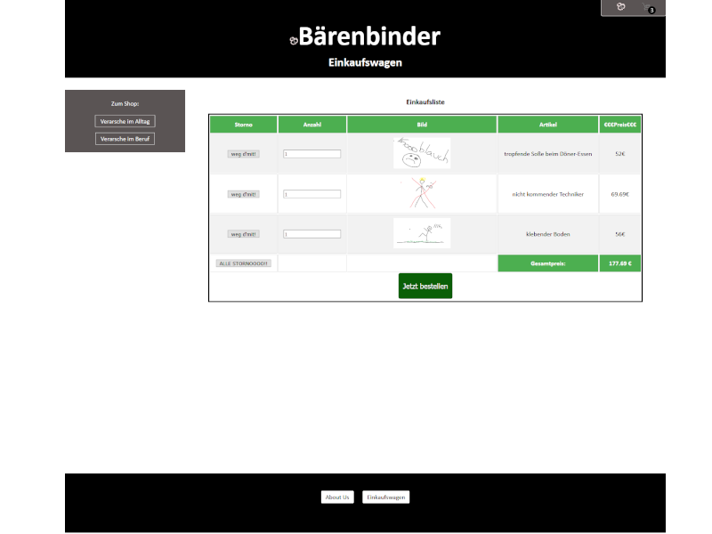
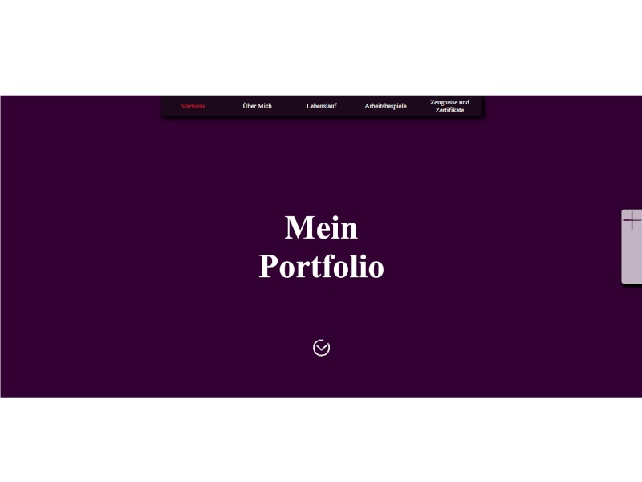

Web
Angular Tutorial
Seit diesem Semester beschäftige ich mich privat mit Angular, da ich es für ein sehr spannendes Framework halte. Leider habe ich noch keine wirklichen vorzeigbaren Projekte, jedoch kann ich auf ein Repository verweisen, welches ich nach dem Tutorial von Unleashed Designerstelle. Hierbei wird auf Binding eingegangen, dem zusammenspie mit einem Server und Datenbanken.
GiS Abschlussarbeit

Den Onlinechat habe ich im Rahmen meines Studiums Medieninformatik in Furtwangen erstellt. Dies war die abschließende Prüfungsaufgabe. Die Note dazu war 1,0. Beim Probieren bitte darauf achten, dass man beim Anmelden oben auswählt ob man sich zum ersten Mal anmelden oder einloggen will. des Weiteren, dass es dauern kann bis der Heroku Server sich hochgefahren hat. Gebaut wurde mit TypeScript, NodeJS, HTML, CSS, MongoDB und Heroku.
Praktikums Aufgabe
SCHANZE UND HORN hat mir die Möglichkeit gegeben, wenn es gerade weniger zu ton gab an einer Praktikumsaufgabe zu arbeiten die die Ausarbeitung von Personas, Wireframes etc. und falls wir Lust hätten, dürften wir unser Projekt auch von Scratch auf Coden. Hier bin ich zum ersten Mal mit XAMPP, PhpMyAdmin, MySQL und PHP in Berührung gekommen. Anstatt mit NodeJS habe ich nun den Server mit PHP aufgesetzt und auch keine MongoDB befehle mehr geschrieben, sondern SQL. Leider hatte ich noch keine Möglichkeit das Projekt öffentlich zugänglich zu machen.
Arbeiten im Praktikum
In meinem Praktikum habe ich an diversen Websites mit WordPress gearbeitet. drei davon sind Mittlerweile online und zwei werden evtl. nach der Beendigung des Praktikums online sen. Gearbeitet wurde hauptsächlich mit dem BeaverBuilder Plugin als Front-End Editor, Gravity Forms und Yoast SEO. Seiten die ich gebaut habe sind Kriewe - Computerservice, Eb Peroutka und an Bilger Exklusiv habe ich aktiv mitgeholfen das Layout zu entwerfen.
GiS - Shop
Den Onlineshop habe ich im Rahmen meines Studiums Medieninformatik in Furtwangen erstellt. Die Produkte sollen nur als Platzhalter dienen. Gebaut wurde mit TypeScript, HTML, CSS. Außerdem wird der Local Storage angesprochen. Es kann zu Problemen auf Mozilla und Edge kommen.
Zum Shop (bitte mit Humor nehmen)
Portfolio welches noch nicht feritg ist
Mein eigentliches Portfolio welches noch nicht fertig ist und viele Texte nur als Platzhalter drin sind. Dadurch, dass ich mein Portfolio bis zu dieser Bewerbung noch nicht fertig habe will ich es bisher nur als Arbeitsreferenz aufzählen Außerhalb von Studium und Praktikum habe ich mich mit HTML und TypeScript Animationen auseinander gesetzt und habe ich auch mit HTML Canvas beschäftigt.
3D Modeling
Uboot
Modelliert mit Blender im Rahmen des Kurses Computer Grafik an der Hochschule Furtwangen.
Fusee Panzer
Modelliert mit Blender und programmiert in C# mit der GameEngine Fusee, im Rahmen des Kurses Computer Grafik an der Hochschule Furtwangen. Fokus der Aufgabe war das "Assets-Picking".
Fusee Arm
Programmiert in C# mit der GameEngine Fusee, im Rahmen des Kurses Computer Grafik an der Hochschule Furtwangen. Fokus der Aufgabe lag auf der Transformation von Objekten.
Erste Unity Versuche
Meine ersten Versuche in Unity. Nachdem ich Ihre Ausschreibung gesehen habe am Wochenende, wollte ich direkt mich in Unity ausprobieren. Ich hatte bereits Kontakt mit der Game Engine im letzten Semester, da meine Freundin in ihrem Psychologiestudium eine Simulation für ihre Bachelorarbeit verwendet hatte, jedoch selbst richtig gearbeitet habe ich erst dieses Wochenende damit.
Gesicht

Ein Gesicht, modelliert in Blender mit zwei unterschiedlich farbigen Lichtquellen als Augen
Würfel
Modelliert mit Blender, mit zwei sich bewegenden Lichtquellen, einem Würfel der sich um die x-, y-, und z-Achse jeweils um 360° rotiert. Das erste Projekt welches ich zum ersten mal ohne jeglichen Einfluss von Tutorials erstellt habe.
Hier gehts zu meinem Git-Repository